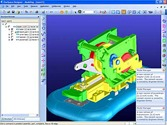

|
 Designer Modeling, dinamik modelleme bazlý, parçanýn geçmiþine
baðlý olamayan 3 boyutlu komple bir CAD (Bilgisayar Destekli
Tasarým) yazýlýmýdýr. Dinamik Modelleme yöntemi ile 3 boyutlu
modeller sanki elastik bir madde ile oynarmýþ gibi deðiþtirebilir.
Bu özellik sayesinde, tasarýmcýlar 3 boyutlu modelleri, baþka
bir tasarýmcýnýn nasýl oluþturduðunu bilmek zorunda kalmadan
kolayca deðiþtirebilirler. Designer Modeling sayesinde, dünya
üzerindeki birçok tasarýmcý, mini bir elektromekanik motordan
dev vinçlere kadar, deðiþik alanlarda, en zor model deðiþikliklerini
bile kolayca yapabilir.
Designer Modeling, dinamik modelleme bazlý, parçanýn geçmiþine
baðlý olamayan 3 boyutlu komple bir CAD (Bilgisayar Destekli
Tasarým) yazýlýmýdýr. Dinamik Modelleme yöntemi ile 3 boyutlu
modeller sanki elastik bir madde ile oynarmýþ gibi deðiþtirebilir.
Bu özellik sayesinde, tasarýmcýlar 3 boyutlu modelleri, baþka
bir tasarýmcýnýn nasýl oluþturduðunu bilmek zorunda kalmadan
kolayca deðiþtirebilirler. Designer Modeling sayesinde, dünya
üzerindeki birçok tasarýmcý, mini bir elektromekanik motordan
dev vinçlere kadar, deðiþik alanlarda, en zor model deðiþikliklerini
bile kolayca yapabilir.
Modern,
kullanýcýya yönelik çalýþma ortamý
- Copilot
iþlevi sayesinde 3 boyutda hýzlý yönlendirme
- Microsoft
Office 2003 kullanýcý arayüzü
- Haraketli
ana menü sayesinde komutlara hýzlý eriþim
- Geliþtirilmiþ
2 boyut Copilot özellikleri
- Geliþtirilmiþ
ön izlemeli otomatik eleman yakalama
- Geliþtirilmiþ
Yapý tarayýcýsý ve CTRL-F arama
- Geliþtirilmiþ
Yardým düzeni ve arama fonksiyonlarý
- Geliþtirilmiþ
Parça yapýþtýrma fonksiyonlarý
- Geliþtirilmiþ
Dinamik olarak Parça düzenmleme
Yeni
araçlar sayesinde daha geliþmiþ tasarým olanaklarý
- Yeni
3 boyutlu eðri fonksiyonlarý
- 3
boyutlu eðri komutlarý, artýk Designer Modeling ana sistemine
dahil edilmiþtir
- Copilot
sayesinde geliþtirilmiþ 3 boyutlu eðri yaratma ve deðiþtirme
özellikleri
- Geliþtirilmiþ
spiral komutlarý sayesinde helozonlu, konik ve düzlemsel
spirallar
- Sürekli
eðrilik fonksiyonlarý
- Geliþtirilmiþ
"yüzey üzerine eðri" komutlarý
- 3
boyutda eðri yuvarlatma komutlarý
Yeni
Yüzeyleme fonksiyonlarý
- Geliþtirilmiþ
"skin" komutlarý
- Geliþtirilmiþ
"cap" (yüzey örme) komutlarý
- Geliþtirilmiþ
çok seçmeli "yüzey uzatma" komutlarý
- Eðimli
kenar uzatma komutlarý
- Çoklu
profiller yayýlmalarý
- Face
Round (Yüzey yuvarlatma) komutlarý
- Geliþtirilmiþ
teðetsel baðlantýlar için yüzey ayarlama komutlarý
- Yüzey
kalitesi kontrolu için "zebra strip " analizi
Geliþtirilmiþ
unsur kontrolu ve öngörünüm
- CATIA,
I-deas, Inventor, Pro/ENGINEER, SolidWorks, Solid Edge,
UG çeviricileri
- Geliþtirilmiþ
"çekme" ve "frezeleme" komutlarý
- En
küçük yüzey kalýnlýðýný tanýtlamak için geliþtirilmiþ "yüzey
eðiltme" komutlarý
- Doðrusal
ve radyal seçenekli geliþtirilmiþ parça kopyalama komutlarý
- "Advanced
Design" modülü ile parça gruplarýnýn kontrol ve oynatma
komutlarý
- Gerçeksel
hareket analizi için kam, diþli çubuk ve diþli iliþki tipleri
- Dinamik
Pozisyonlama yaratýrken geliþtirilmiþ iliþki tipleri
- Çarpýþma
tespiti ve AVI Dosyasý yaratmak için yeni oynatma fonksiyonlarý
Tasarýmlarý
belgeleme fonksiyonlarý
- Çoklu
açýlým üretimi belgeleri için geliþtirilmiþ "sac metal"
fonksiyonlarý
- Geliþtirilmiþ
3 boyutlu düzlemler fonksiyonlarý
- Geliþtirilmiþ
3 boyutlu notlar ve yazý ayarlarý
- Geliþtirilmiþ
3 boyutlu belge transferi
Yeni eDrawings desteði
- 13.20
verziyonunda yeni XVL formatý desteði
- Geliþtirilmiþ
"2 Boyutlama" özellikleri
- Boyutlandýrmada
oluþturulan ek bilgilerin deðiþtirilmesi için yeni fonksiyonlar
- Referans
noktalarýnýn deðiþtirilme komutlarý
- Yeni
sað fare tuþu komutlarý (örneðin boyutunu yönünü deðiþtirme)
Yeni vida çizgileri komutlarý
- Yüzey
parçalarýnýn desteklenmesi
- Geliþtirilmiþ
çizici tipleri ve ayarlarý
- Geliþtirilmiþ
sembol iþlemleri
- Geliþtirilmiþ
3 boyutlu belgelerin 2 boyuta transferi
- Yazý,
sembol ve geometri için geliþtirilmiþ "Kopyala ve Yapýþtýr"
iþlemleri
OneSpace
Designer Modeling hakkýnda daha fazla bilgi için >
www.cocreate.com
Bu programýn demo versiyonunu talep etmek için > www.bsdt.net/tr/demo.php
Ýrtibat:
Sonat Elmacý
sonate@bsdt.net
BSDT Biliþim
Mecidiyekoy Mah. Atakan Sok. No:13/2
80310 Mecidiyeköy Ýstanbul
Tel: (212) 217 82 23
Faks: (212) 213 75 75
Web: www.bsdt.net
|